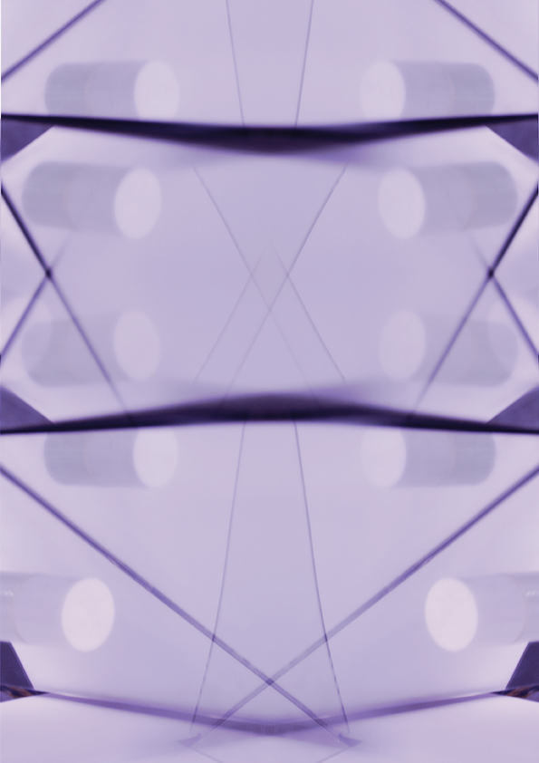
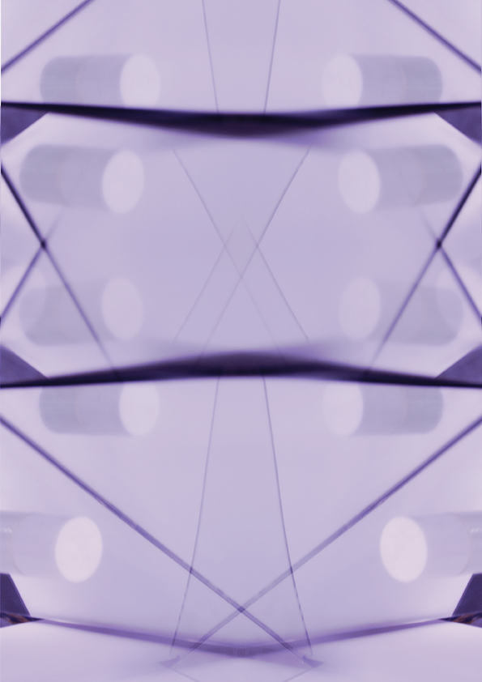

1_Bricolage En quête de cheminement plutôt que d’un résultat
(test, exploration avec Raspberry Pi et Arduino)


Support de communication de l'événement
Projet mémoire _
3e année DN MADe Graphisme
Création d'une exposition immersive et interactive. Bricolage1 d'un dispositif numérique et mise en images de l'album Brute de forge de Jérémy Reynaud.
Format : Installation / Numérique
Outils : Raspberry Pi / Arduino / Processing / TouchDesigner


Experimentation plastique _
1e année DSAA Design Graphique
Développer un système graphique pour parler d'un style musical. Ces cartes expliquent le rôle des différents composants de l'acid techno, musique peu connue du grand publique malgré sont ancienneté.
Format : Édition (630 x 890mm)
Outils : Illustrator / Gravure laser


Rapport de stage _
3e année DN MADe Graphisme
Rapport de stage d'une durée de deux mois, effectué à l'agence Fertil Ink au sein de la Grand Usine Créative de Saint-Étienne, découverte des rudiments de la production audiovisuelle.
Format : Édition (200 x 250mm)
Papiers : Couché 100g / Calque 70g
Identitée visuelle _
3e année DN MADe Graphisme
Les Docks de Cahors sont un espace de vie et de partage où se croisent scène de musiques actuelles, graff park et skatepark. Cet espace chargé d'histoire, en perpétuelle évolution, mutation, transformation méritait une nouvelle image.
Format : Numérique / Édition (85 x 55mm)
Outils : InDesign / Illustrator / Photoshop / AfterEffect
Travail de groupe

Atelier photo : Répétition _
2e année BTS Design Graphique
Création d'une série d'images autour de la répétition, par le biais de différentes techniques de photomontage traditionnelles ou numérique.
Travail autour du motif et du fractal, faisant perdre le sens du sujet photographié.
Format : Numérique
Outils : Appareil photo objectif 50mm / Miroirs / Lightroom / Photoshop
 
